Operación diariaLos módulos caja y tienda reúnen el trabajo del turno y la consulta de pedidos online. El módulo inbox aparece como PRONTO en las referencias.
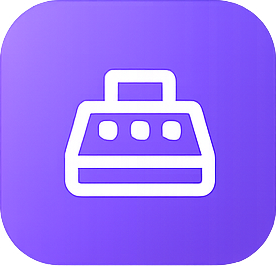
CajaInbox PRONTOTienda
01 Conocer02 Acompañar03 Practicar
Introducción · Operación diaria
Un recorrido por operación diaria
Los módulos caja y tienda reúnen el trabajo del turno y la consulta de pedidos online. El módulo inbox aparece como PRONTO en las referencias.
Cómo leer esta guía
Comenzaremos por la presentación del grupo. Cada módulo conserva su explicación, sus capturas y una actividad de ejemplo para relacionar las funciones.
Parte de un recorrido mayor
Esta guía de Primeros pasos reúne los módulos de Operación diaria. Las referencias a otros grupos permiten reconocer cómo se conecta el trabajo; esos módulos se desarrollan en las otras guías de la colección.
Antes de comenzar · Operación diaria
Índice · Operación diaria
Las entradas enlazan con las páginas de esta guía.
Después de Servicio, pasamos a Operación diaria: 3 módulos en el orden del menú, 2 disponibles y 1 marcado como PRONTO.
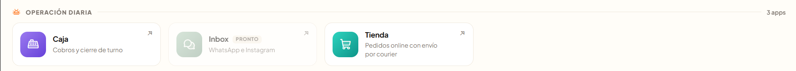
Operación diaria: módulos caja, inbox (PRONTO) y tienda.
Módulo Caja
Acompaña los cobros y el cierre de turno. Su recorrido se desarrolla a continuación.
Módulo Inbox · PRONTO
El menú lo presenta para WhatsApp e Instagram, todavía marcado como PRONTO.
Módulo Tienda
Reúne pedidos online pagados con envío por courier, delivery local o retiro. Lo conoceremos después del módulo caja.
Operación diaria · Módulo Caja
Módulo Caja: acompañar el turno
El módulo caja es el primer módulo de Operación diaria. Reúne las ventas y el control del efectivo durante el turno.
Comenzar con el fondo inicial
Cuando la caja está cerrada, se indica el Efectivo inicial en el cajón. La pantalla aclara que este fondo sirve para dar vuelto y no cuenta como venta.
Abrir el turno
El botón Abrir caja y empezar a vender permite comenzar. El monto visible corresponde al negocio de ejemplo.
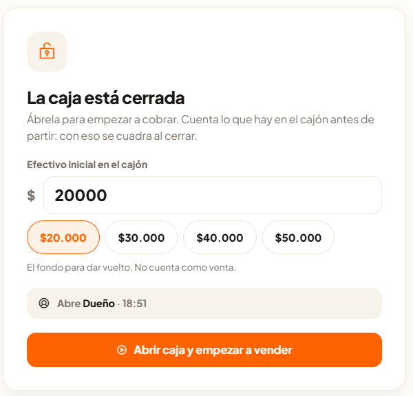
Formulario de apertura: efectivo inicial y acción para abrir la caja.
Operación diaria · Módulo Caja
Reconocer la caja abierta
Con el turno abierto, el resumen reúne la información del momento y los accesos a las tareas principales.
Leer el resumen
Se muestran la apertura, el fondo inicial y el total del turno, separado en Efectivo, Transferencia y Tarjeta.
Elegir la tarea
Los botones Nueva venta, Cerrar turno y Movimiento de efectivo permiten continuar el trabajo. La pestaña Historial reúne los turnos registrados.
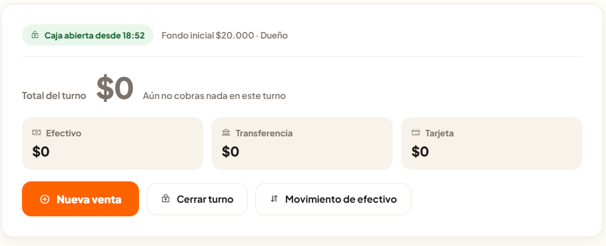
Resumen de la caja abierta y sus acciones principales.
Operación diaria · Módulo Caja
De la carta a la cuenta
Nueva venta presenta la carta, el contenido de la venta y los datos que se revisan antes de cobrar.
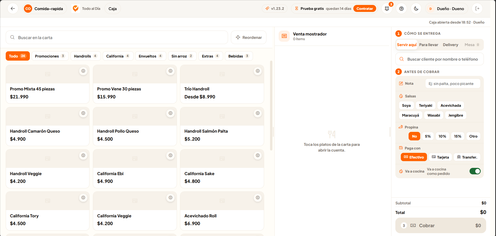
Vista de Nueva venta: carta, contenido de la venta y datos previos al cobro.
La carta y la cuenta
El buscador y las categorías ayudan a encontrar productos. Al seleccionarlos, se incorporan al contenido de la venta.
Antes de cobrar
La columna lateral reúne la modalidad de entrega, el cliente, las notas, las salsas, la propina y el medio de pago. El total y la acción Cobrar aparecen al pie.
Operación diaria · Módulo Caja
Registrar entradas y salidas de efectivo
Movimiento de efectivo permite distinguir un retiro de un ingreso durante el turno.
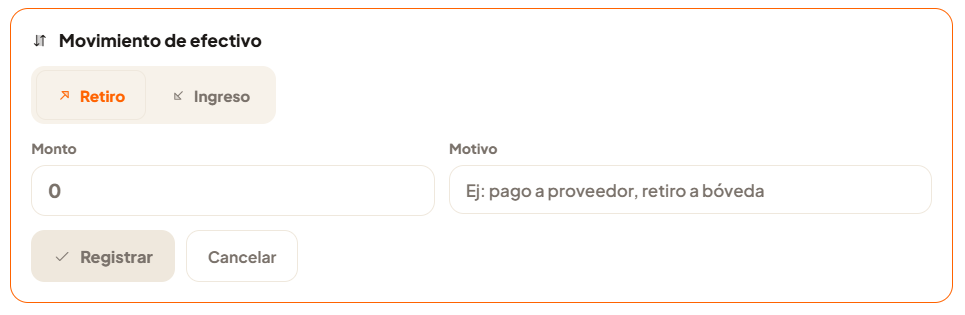
Formulario de movimiento de efectivo.
Identificar el movimiento
Se elige Retiro o Ingreso y se completan Monto y Motivo.
Dejarlo registrado
El botón Registrar permite continuar con los datos del movimiento; Cancelar ofrece salir del formulario.
Operación diaria · Módulo Caja
Comparar el efectivo al cerrar
Cerrar turno presenta el espacio para cuadrar la caja con el efectivo que se cuenta al terminar.
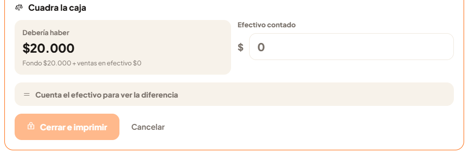
Formulario de cierre: efectivo esperado, efectivo contado y acción final.
Lo esperado y lo contado
Debería haber muestra el importe esperado. En Efectivo contado se registra lo que hay en el cajón para conocer la diferencia.
Terminar el turno
La acción visible es Cerrar e imprimir. La captura muestra el formulario previo al cierre; no incluye el comprobante resultante.
Operación diaria · Módulo Caja
Volver a los turnos registrados
Historial permite consultar la información de turnos anteriores y sus resultados.
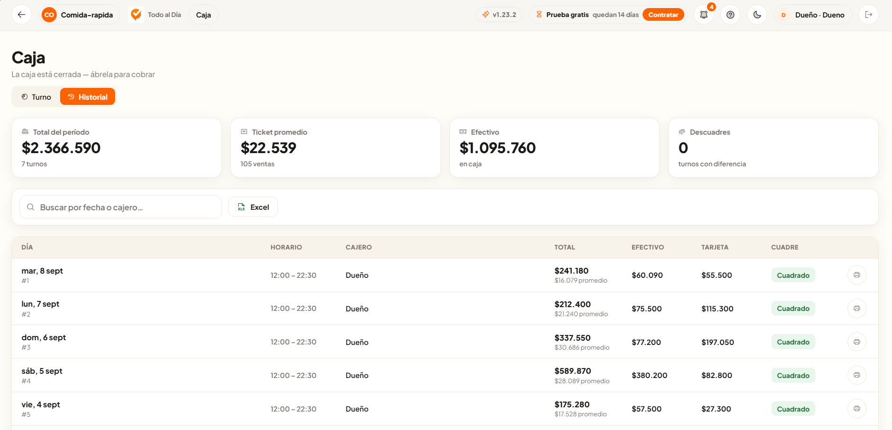
Historial de turnos del negocio de ejemplo.
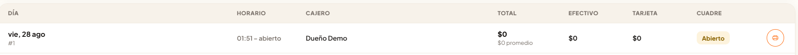
Detalle de un registro: el ícono de impresora aparece al extremo derecho de la fila.
Una mirada al período
Las tarjetas muestran el total del período, el ticket promedio, el efectivo y los descuadres.
Encontrar un turno
El buscador indica fecha o cajero. La tabla reúne día, horario, cajero, total, efectivo, tarjeta y cuadre. El botón Excel exporta los datos en formato CSV para analizarlos en una hoja de cálculo.
Imprimir el cierre de turno
El ícono de impresora, al extremo derecho de cada fila del historial, permite imprimir el cierre de turno correspondiente. Así se puede obtener una copia del turno que se está consultando.
Operación diaria · Módulo Caja
Leer el resumen del historial
Sobre el listado, las tarjetas reúnen indicadores del período. Ayudan a reconocer los importes y los turnos que presentan diferencias antes de revisar cada registro.
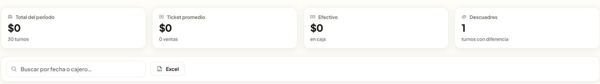
Indicadores del historial, buscador por fecha o cajero y botón Excel para exportar datos en CSV.
Total del período
Presenta el importe total del período consultado. Debajo se muestra la cantidad de turnos que acompaña ese resumen.
Ticket promedio
Indica el importe promedio por venta. La cantidad de ventas aparece debajo para dar contexto al valor mostrado.
Efectivo
Muestra el importe identificado como efectivo en caja dentro del resumen del historial.
Descuadres
Indica cuántos turnos presentan una diferencia. Por ejemplo, el valor 1 de la captura corresponde a un turno con diferencia, no a un importe en dinero.
Operación diaria · Módulo Caja · Actividad de ejemplo
Acompañemos una venta del turno
Con la caja abierta, una persona se acerca al mostrador para hacer un pedido.
1. Armar la cuenta
Desde Nueva venta podemos encontrar los productos en la carta y revisar el contenido de la venta.
2. Revisar antes de cobrar
La modalidad de entrega, las observaciones, el medio de pago y el total ayudan a comprobar la atención antes de usar Cobrar.
3. Continuar con las compras online
En Operación diaria, el módulo inbox permanece marcado como PRONTO. Seguiremos con el módulo tienda para conocer cómo se consultan los pedidos online pagados.
La carta→La cuenta→Antes de cobrar
Operación diaria · Módulo Tienda
Módulo Tienda: seguir los pedidos online
Continuamos en Operación diaria con el módulo tienda. Reúne los pedidos online pagados con envío por courier, delivery local o retiro.
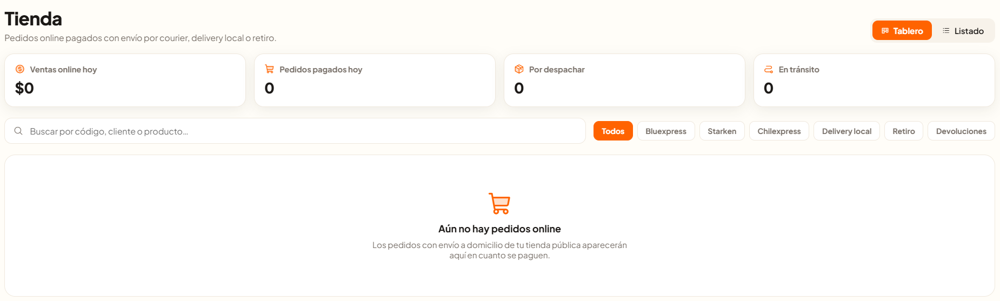
Vista Tablero del módulo tienda, sin pedidos online registrados en el ejemplo.
De la compra al seguimiento
La pantalla indica que los pedidos con envío a domicilio de la tienda pública aparecen aquí en cuanto se pagan. Este módulo permite consultar esa parte de la atención online.
Reconocer la vista inicial
Los controles Tablero y Listado permiten elegir cómo consultar los pedidos. En la captura aparece Aún no hay pedidos online, porque no hay registros para mostrar.
Operación diaria · Módulo Tienda
Encontrar un pedido y reconocer su avance
El resumen superior y los filtros ayudan a orientar la consulta según la actividad del día y la modalidad de entrega.
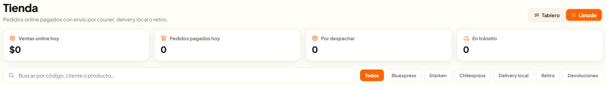
Detalle de la vista Listado: indicadores, buscador y filtros de consulta.
La actividad del día
Ventas online hoy muestra un importe y Pedidos pagados hoy una cantidad. Permiten distinguir cuánto se ha vendido de cuántos pedidos se han pagado.
El avance de los envíos
Por despachar cuenta pedidos pendientes de despacho; En tránsito señala los que están en camino. Estas tarjetas son indicadores del resumen.
Buscar y filtrar
El buscador permite localizar por código, cliente o producto. Los filtros visibles son Todos, Bluexpress, Starken, Chilexpress, Delivery local, Retiro y Devoluciones.
Consultar el listado
La vista Listado conserva los indicadores, el buscador y los filtros. En esta referencia está vacía; las filas y las acciones de un pedido se incorporarán cuando haya capturas con registros.
Operación diaria · Módulo Tienda · Actividad de ejemplo
Orientemos la consulta de una compra online
Imaginemos que una persona consulta por una compra pagada que recibirá mediante delivery local.
1. Ubicar la consulta
En el módulo tienda podemos buscar por el código del pedido, el cliente o el producto. El filtro Delivery local ayuda a enfocar la consulta en esa modalidad.
2. Leer el resumen con contexto
Las tarjetas Por despachar y En tránsito permiten reconocer el avance general. Para conocer la situación de una compra concreta, hace falta consultar su registro; los totales por sí solos no la identifican.
3. Continuar hacia la gestión
Con esta consulta terminamos el recorrido de Operación diaria. El siguiente grupo es Gestión, que comienza por el módulo ventas y reúne herramientas para conocer y organizar el negocio.
Buscar la compra→Filtrar la entrega→Consultar el registro→Gestión
Cierre · Operación diaria
Continuar desde lo aprendido
Conocimos la apertura y el cierre del turno, las ventas y la consulta de pedidos online. Para continuar con la información del negocio, el siguiente recorrido está en la guía de Gestión.
Volver a una tarea
El índice de esta guía enlaza con cada explicación y actividad. Las imágenes muestran el negocio de ejemplo y acompañan el contenido de cada módulo.
Seguir explorando las otras guías
Te invitamos a revisar las guías de Servicio y Gestión. Allí podrás conocer los módulos de esas categorías y cómo se relacionan con las tareas de este recorrido.
 Todo al Día
Todo al Día